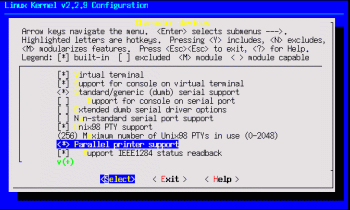
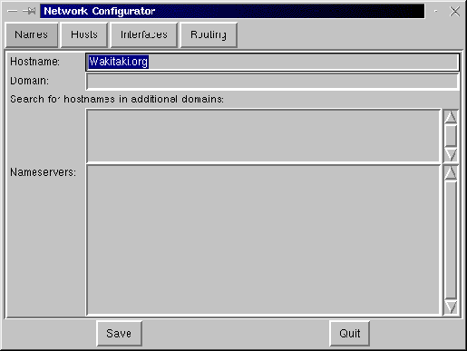
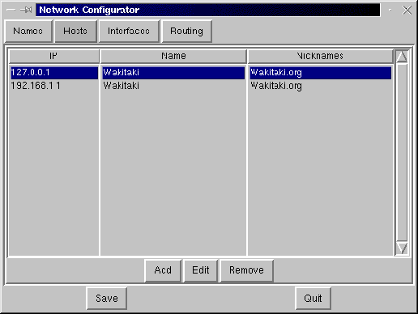

[ < ][
|| ][ > ]
Herramientas, Administración y Configuración
Configuración Básica del Sistema.
Para su configuración básica, generalmente bastará
con ejecutar el comando 'setup' desde una terminal.
Ejemplo:
$ setup
Actualmente se encuentra un programa muy avanzado para el desarrollo
de esta tarea, se llama 'linuxconf' es un front-end (o cómodo acabado),
por lo que es muy fácil e intuitivo de manejar, se usa tanto desde
una terminal (modo texto) gracias a la instalación de las librerías
ncurses, y en modo gráfico y con el mismo nombre, gracias a las
librerías gtk+
$ linuxconf
-
Pese a nuestros intentos por estar al día la comunidad Linux es
una de las comunidades que más rápido avanzan, más
incluso de lo que cabría esperar, por eso, es importante que te
pongas al día, que visites en Internet Páginas Web
dedicadas a noticias de Linux, o compres revistas.
Tras cargarse el programa de configuración, podremos acceder
a cualquier parte que queramos configurar.
Antes de ejecutar un programa de configuración insistimos
en leer el manual sobre dicho programa, por ejemplo si queremos programar
acciones para que se ejecuten a cierta hora, cierto día limpiando
ficheros viejos, etc., etc., tendremos que usar el crond,
para saber como se configura el crond, escribimos: man
crond
Existen otras muchas aplicaciones para configurar muchas más
cosas: y aunque puede que nunca tengas que hacer uso de ellas aquí
están algunas: (Estas aplicaciones suelen venir incluidas en otras
apliciones, por ejemplo en el "control-panel" de redhat, linuxconf, o el
mismo setup de toda Distribución.)
kerneld (Para configurar el kernel una vez instalado y compilado)
sndconfig (Para configurar la tarjeta de sonido)
...
-
crontab -e
-
Edita el fichero. (Deberás aprender el editor vi)
-
crontab -l
-
Lista el contenido de un fichero.
Como en todo sistema operativo, hay veces que tendremos que editar los
ficheros manualmente, cosa a la cual no hay que tener miedo, incluso habrá
veces que introduzcamos errores, para eso antes de editar un fichero de
configuración hay que:
-
Hacer copia de seguridad del fichero a editar
-
Guardar la copia de seguridad en un disquete, no sólo bastará
la del directorio.
-
En caso de error, sustituir por el contenido anterior
-
cp AntiguoFichero.config NuevoYerroneoFichero.config, con lo cual
estaremos copiando el Fichero antiguo de configuración encima del
Nuevo fichero de configuración que hemos editado nosotros y está
mal.
los ficheros básicos de configuración de todo sistema Linux
son:
/etc/rc.d/rc.sysinit
-
Fichero de INICIALIZACIÓN de la máquina, donde se guarda
el PATH...
/etc/rc.d/rc y
/etc/rc.d/rc.local
-
Ficheros, que tras cargados el inicializador se cargarán los últimos,
sirviendo de auxiliares.
/etc/crontab
-
Ejecución de tareas programadas
/etc/ethers
-
Mapeado entre direcciones RARP entre Ethernet e IP
/etc/exports
-
Lista de directorios exportados en unidades NFS
/etc/fstab
-
Lista de sistemas de ficheros a montar
/etc/group
-
Listado de grupos y miembros de cada uno
/etc/hosts
-
Direcciones IP y nombres de máquinas
/etc/hosts.allow
-
Maquinas que pueden conectarse con la nuestra
/etc/hosts.deny
-
Maquinas que tienen denegado permisos para conectarse a la nuestra
/etc/inetd.conf
-
Fichero de configuración del demonio inetd
/etc/inittab
-
Información de arranque del sistema
/etc/lilo.conf
-
Configuración del LInux LOader
/etc/motd
/etc/nsswitch.conf
-
Orden de lectura de datos del sistema (cuentas, servicios...)
/etc/bashrc
-
Lo que se cargará por defecto para todos los usuarios.
-
La mala gestión del fichero /etc/bashrc, podrá alterar el
funcionamiento del sistema, ya que este fichero junto los profile siempre
se carga cuando se ejecuta alguna opción o comando para recargar
la memoria y hacer así una mejor gestión de ella, por eso,
habrá comandos que no se podrá contener en é como
son: (echo, setleds, o similares) ya que tras la ejecución de un
comando se repetirán en pantalla.
-
LOS FICHEROS QUE HAS VISTO SON EJEMPLOS AÑADIDOS Y POR LO TANTO
NO LOS DE TU SISTEMA
Evidentemente, no vamos a poner todos los ficheros que hay en el directorio
/etc./, ya que hay tantos que ocuparía un tutorial completo como
éste sólo para ese directorio.
RECOMENDACIÓN:
Para enterarse de cualquier fichero puedes pedir ayuda con: man
fstab, tendrás información más detallada de para qué
sirve el fichero fstab y cómo se puede utilizar.
[ ^ ]
Configuración de la impresora.
Para poder usar tu impresora bajo Linux, lo primero que necesitas es tener
compilado el núcleo con la opción como en "Parallel Printer
Support", dentro de "Character Devices".

El núcleo ya viene para soportar la impresora (esto es en caso
de que no trajera soporte), y ahora deberás configurar el fichero
de impresora
/etc/printcab
------------------------------------------------------------
# Please don't edit this file directly unless you know what you are
doing!
# Be warned that the control-panel printtool requires a very strict
format!
# Look at the printcap(5) man page for more info.
#
# This file can be edited with the printtool in the control-panel.
# HP660C Printer Default. NAxNA a4/
HP660C|lp|lp0:\
:sd=/var/spool/lpd/lp0:\
:mx#0:\
:lp=/dev/lp0:\
:if=/var/spool/lpd/lp0/filter:\
:sh:
# IBMprint Printer. NAxNA a4
IBMprint|lp1:\
:sd=/var/spool/lpd/lp1:\
:mx#0:\
:sh:\
:lp=/dev/lp1:\
:if=/var/spool/lpd/lp1/filter:
-----------------------------------------------------------
Existe ABUNDANTE documentación sobre la Impresión, para
ello te remitimos:
/usr/doc/HOWTO/translations/es/Configuración-Impresión-Como
/usr/doc/HOWTO/translations/es/Uso-Impresión-Como
Si lo que desea es usar LINUX como SERVIDOR y compartir las impresoras,
o montar SERVIDORES de impresión:
/usr/doc/HOWTO/translations/es/Samba-Como
Hacer/Restaurar copias de seguridad del sistema.
Te recomendamos, si usas un gran sistema, que periódicamente
hagas copias de seguridad de TODO el sistema, más todavía
si existen varios usuarios que usen tu máquina. Para realizar esto
con éxito has de hacer:
Si obtienes discos necesarios (sea cual sea su formato)
-
(Si tienes discos de 1.44 MBytes)
-
fdinit /dev/fd0H1440
-
(Si tienes discos de 720 KBytes)
-
fdinit /dev/fd0H720
-
Utilizar fdinit, prepara el disquete para un formato necesario para
hacer copias de seguridad, una vez inicializado el disquete podrás
realizarla.
Te recomendamos que tengas al menos la siguiente cantidad de disquetes
preparados:
(formula no probada)
NumDisquetes = ( ( (CapacidadParticionLinux-DiscoLibre)/CapacidadDisquetes
) /1.7 )
Esto te puede dar una idea aproximada, pero siempre por si acaso tráete
unos disquetes de más, ya que algunos ficheros no tienen la misma
capacidad de compresión que otros.
(*En megas)
NumDisquete=(((1000-200/1.44)/1.7)
(*Siempre y cuando se utilice el segundo método)
Total, 327 Disquetes para hacer una copia de seguridad de 800 Megas
Una vez obtienes los discos necesarios empezamos nuestra copia de seguridad
(backup)
estando
en la raíz escribes:
$ tar cvfM /dev/fd0 *
O bien para hacer copia de seguridad de algunos fichero o directorio(s)
$ tar cvfM /dev/fd0 fichero1 fichero1
Nos quedaremos ahora con el ejemplo II:
$ tar cvfM /dev/fd0 fichero1 fichero2
No se puede emplear la opción 'z' de compresión en la copia
de seguridad, sin embargo para ahorrar disquetes y tiempo, que es lo más
importante podemos hacer:
-
$ tar cvfz los2archivos.tgz fichero1 fichero2
-
$ tar cvfM /dev/fd0 los2archivos.tgz
Recuperar la información:
-
cd /dir-destino
-
tar xvfM /dev/fd0
-
O bien empleando el segundo método.:
-
cd /dir-destino
-
tar xvfM /dev/fd0
-
tar xvfz archivo.tgz
Para lo cual es más que recomendable que se tenga un script
para la creación/recuperación de backups
Si intentamos ver el directorio de los discos de backup, podemos ver
que no tienen formato de sistema (msdos, minix, ext2, vfat...). De todas
formas, es posible consultar el contenido escribiendo:
$ tar tvfM /dev/fd0
[ ^ ]
Formatear disquetes:
Si nos encontramos discos sin formato alguno, sin sectores ni pistas
definidas (generalmente ya todos llevan formato de ms-dos) deberemos hacer:
-
fdformat /dev/fd0H1440
-
fdformat /dev/fd0H720
-
Ya que al no tener sectores ni pistas el sistema no podrá distinguir
si el disco es de 1.44 Mb y 720 Kb, por lo que deberás inicializarlo
de esta manera. Este es un proceso lento y costoso y sólo hará
falta una ÚNICA VEZ EN LA VIDA DEL DISQUETE.
[ ^ ]
Gestión de comunicación interna:
Lo más normal para utilizar la comunicación en Linux
es mandar un e-mail a otro usuario.
Los programas más usados en modo texto para esta operación
son el pine, o el mail
Como el pine es un front-end (acabado cómodo), y es más
bonito e intuitivo dejaremos que sea usted mismo quien tenga curiosidad
por manejarlo e instalarlo. Ahora explicaremos el uso de MAIL
-
FORMA:
En este ejemplo el usuario Carlos mandará un email a Javier:
mail javier
Subject: ¡Reunión suspendida!
Javier: He leído en la lista de correo de GLHis, que nuestra
reunión ha sido suspendida
hasta el 14 del mes próximo.
El Coordinador nos ha dado un teléfono de contacto que es
el:
555-55-55-55Un saludo Carlos.
[Ctrl]+[D]
-
Cuando Carlos escriba las líneas de arriba para terminar el mensaje
deberá pulsar la combinación de teclas [Ctrl]+[D]
-
En ese momento el mensaje será mandado.
A Javier, si está en su sesión de Linux, o bien cuando
se conecte, le saldrá un mensaje similar a este:
You have (new) mail.
En ese momento para saber el correo que tiene, javier deberá
escribir:
mail
Entonces le saldrá una lista de correos recibidos. Si el correo
recibido de Carlos fuera por ejemplo el 3º, para verlo carlos escribirá:
#3
y ya estará viendo el mensaje. Si quiere pedir ayuda, escribirá:
#? ó help Si quiere borrar los mensajes del 1 al
8 escribirá:
#d 1-8 Si quiere salir sin guardarlos escribirá:
#x Si desea guardar los correos leídos escribirá:
#q
Si desea ver otra vez los ficheros que hay escribirá:
#t
También se puede consultar el correo antiguo con la opción
-f (mail -f)
POSIBLES ERRORES:
Generalmente, cuando cambia el nombre de la máquina, también
hay que cambiar el "host" de la misma, esta opción tan aparentemente
complicada se muy sencilla de hacer con aplicaciones como "netcfg"
o "netconf" que viene con la aplicación: "linuxconf".
y que la primera funciona bajo X-Window, a continuación se muestran
dos imágenes para hacer esto.

Otras opciones a cambiar...:

OTRAS FORMAS DE COMUNICACIÓN:
Otra forma de comunicación es vía talk,
con un usuario que esté conectado en tu red local, o en tu mismo
ordenador en otro terminal.
-
Si no queremos recibir peticiones de comunicación de esta forma,
puedes usar mesg n. La orden: mesg (de
message,
mensaje en inglés) nos dirá si estamos y
ó
n.
Sólo nosotros y el superusuario puede cambiarnos de un estado a
otro.
[ ^ ]
Archivos de registro.
Linux, como buen sistema operativo que se precie, realiza una serie
de archivos de registro para que el administrador del sistema sepa en todo
momento quién entra, a qué hora, cuánto correo hay,
etc.
Toda esta información se guarda celosamente en /var/log, en el
que podemos observar varios archivos.
[ ^ ]
En caso de catástrofe.
Antes que nada, tranquilízate, averigua cual es error:
-
En este caso, haz un disquete de arranque, entra en el sistema montando:
-
mount -t ext2 /dev/hda3 /mnt
-
cd /mnt
En este momento habrás montado y estarás en tu partición
del disco duro 'a', partición '3', (suponiendo que es hay donde
está tu Sistema Linux, ya que hemos supuesto que en hda1, hay otro
S.O.,
hda2 está la partición para swap
y en hda3 está ext2 para tu soporte Linux.)
[ ^ ]
Comunicación a todos los usuarios:
En cualquier momento, puede ser que se necesite comentar a todos los
usuarios cualquier cosa que surga en el sistema (funcionamiento, capacidad,
nuevos servicios, servicios extinguidos...) esto, bien podría hacerse
por correo electrónico a todos los usuarios del sistema, pero a
no ser que se tuviera configurado un "alias para el correo", o un "majordomo",
podría ser algo tedioso sin coexisten muchos usuarios en el mismo
sistema.
Para solucionar esto existe en fichero: /etc/motd, el cual podrá
editar root y exponer un comunicado que
será presentado a todos los usuarios que se conecten a la máquina
tras identificar su login y su clave
de acceso.
[ ^ ]